4.7. Detalle de Almacenamiento¶
Este reporte da información sobre la cantidad de productos que han sido Ordenados, Reservados en Existencia y Disponible, a demás auditar en que “Almacén” y “Ubicación” se encuentra cada uno. Por otra parte, por cada transacción del producto se visualiza su movimiento.
Ubique y seleccione en el menú de ADempiere, la carpeta “Gestión de Materiales”, luego seleccione el reporte “Detalle de Almacenamiento”.
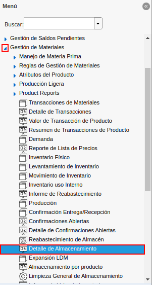
Imagen 1. Menú de ADempiere
Podrá visualizar la ventana del reporte con diferentes campos que le permiten al usuario, filtrar la información en base lo requerido por el mismo.
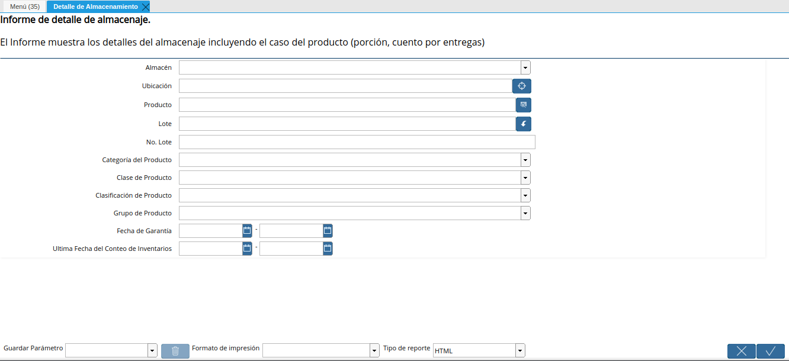
Imagen 2. Ventana del Reporte Detalle de Almacenamiento
Seleccione en el campo “Almacén”, el almacén por el cual requiere filtrar la información.
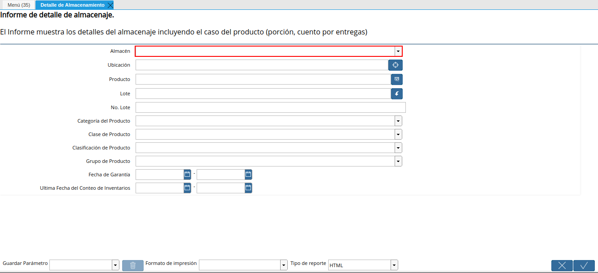
Imagen 3. Campo Almacén
Seleccione en el campo “Ubicación”, la ubicación exacta por la cual requiere filtrar la información.
Imagen 4. Campo Ubicación
Seleccione en el campo “Producto”, el producto por el cual requiere filtrar la información.
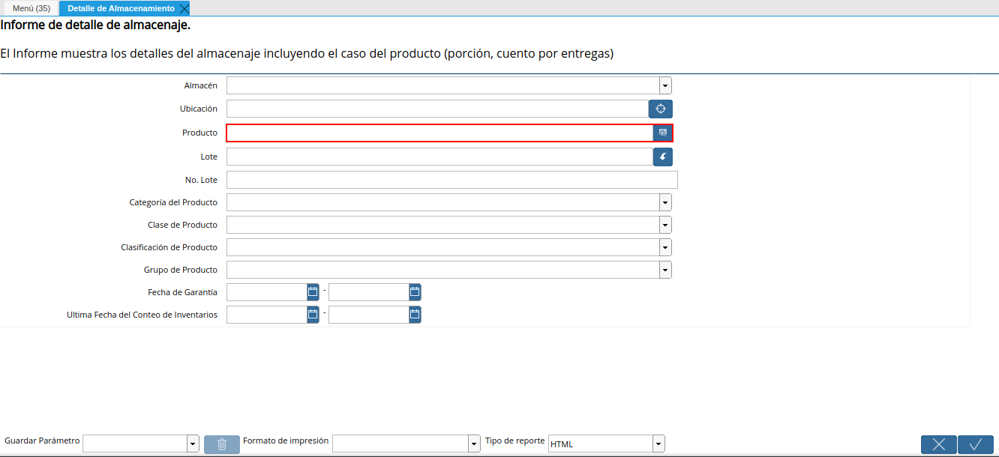
Imagen 5. Campo Producto
Seleccione en el campo “Lote”, el lote por el cual requiere filtrar la información.
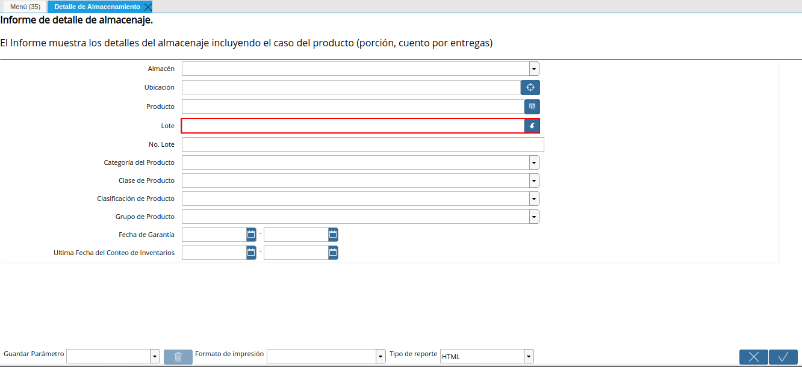
Imagen 6. Campo Lote
Introduzca en el campo “No. Lote”, el número de lote específico del producto por el cual requiere filtrar la información.
Imagen 7. Campo No. Lote
Seleccione en el campo “Categoría del Producto”, la categoría del producto por la cual requiere filtrar la información.
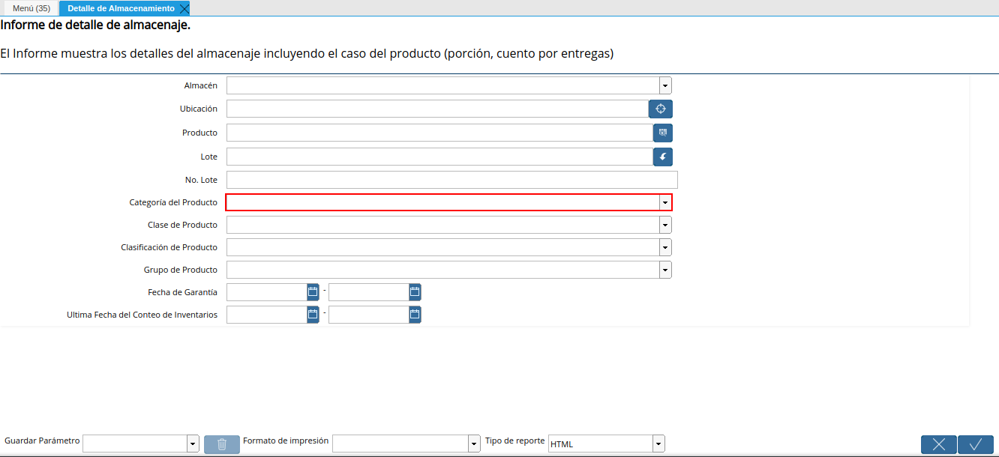
Imagen 8. Campo Categoría del Producto
Seleccione en el campo “Clase de Producto”, la clase del producto por el cual requiere filtrar la información.
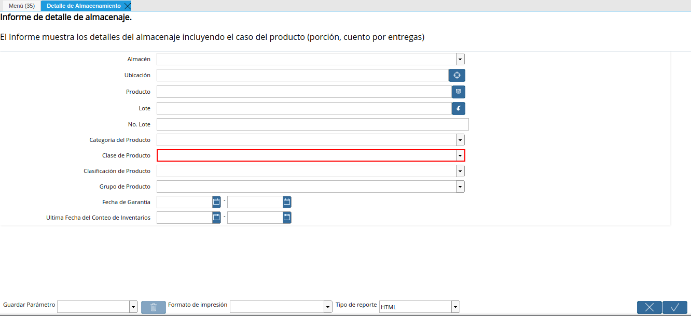
Imagen 9. Campo Clase de Producto
Seleccione en el campo “Clasificación de Producto”, la clasificación de producto por la cual requiere filtrar la información.
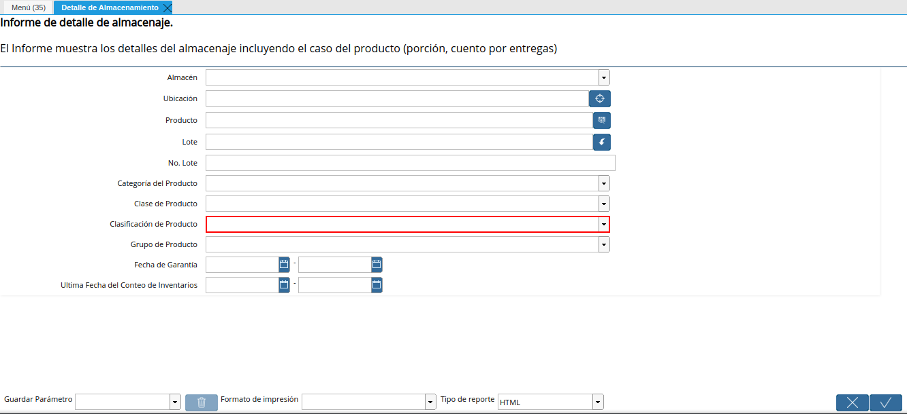
Imagen 10. Campo Clasificación de Producto
Seleccione en el campo “Grupo de Producto”, el grupo de producto por el cual requiere filtrar la información.
Imagen 11. Campo Grupo de Producto
Indique en el campo “Fecha de Garantía”, la fecha de garantía por la cual requiere filtrar la información.
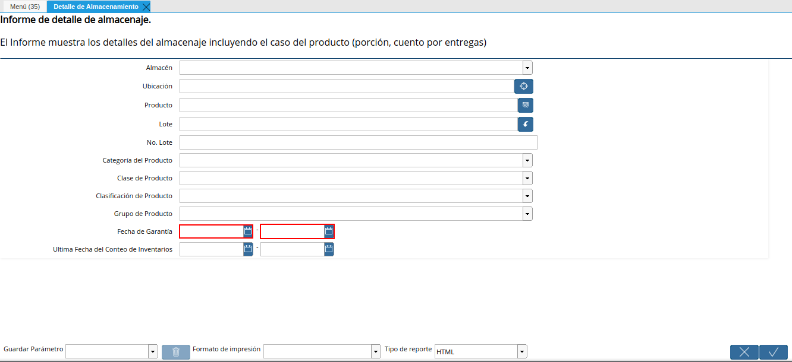
Imagen 12. Campo Fecha de Garantía
Indique en el campo “Última Fecha de Conteo de Inventarios”, la última fecha de conteo de inventario por el cual requiere filtrar la información.
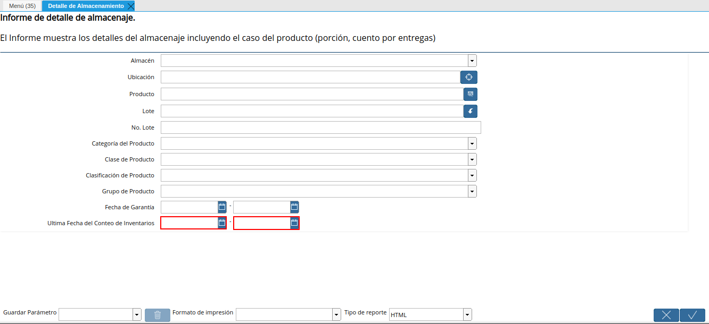
Imagen 13. Campo Última Fecha de Conteo de Inventarios
Seleccione la opción “OK”, para generar el reporte en base a lo seleccionado en los campos indicados anteriormente.
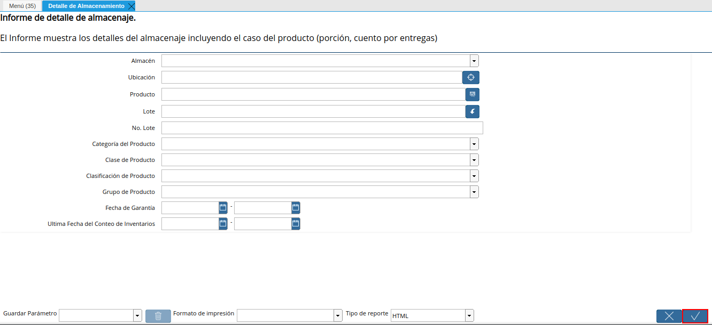
Imagen 14. Opción OK
Podrá visualizar de la siguiente manera, el reporte de detalle de almacenamiento generado.
Imagen 15. Reporte Detalle de Almacenamiento
Para cambiar el formato del reporte generado, se debe seleccionar el formato requerido en el campo “Tipo de Reporte”.
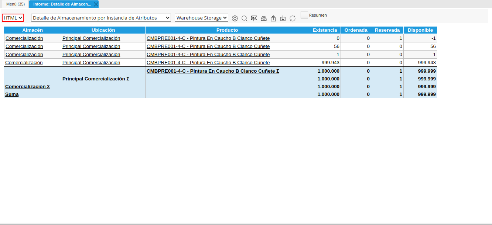
Imagen 16. Campo Tipo de Reporte
Al seleccionar un tipo de reporte, ADempiere actualiza de manera automática el reporte generado con el formato seleccionado. Para ejemplificar el caso, es utilizado el formato “PDF”.
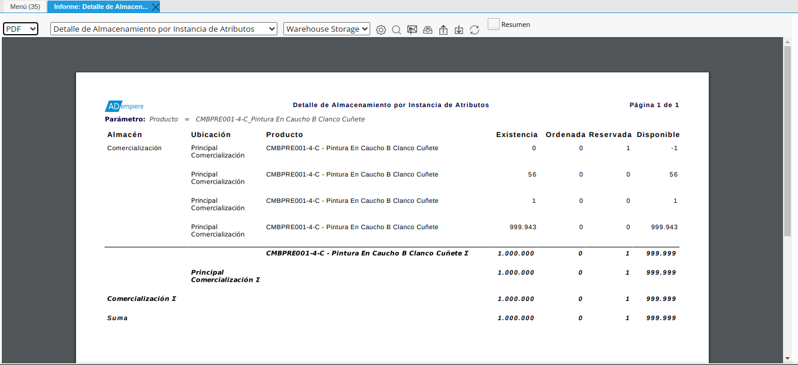
Imagen 17. Reporte Detalle de Almacenamiento con Formato PDF
En el reporte “Detalle de Almacenamiento”, se visualizaran las siguientes columnas:
Almacén: Donde se encuentra el “Producto”
Ubicación: Donde se encuentra el “Producto” dentro del “Almacén”
Producto: Muestra el código y nombre del producto
Existencia: Esta columna indica la cantidad de producto dentro de “Ubicación” del “Almacén”
Ordenada: Son aquellos productos que tiene orden de compra en “Estado de Documento Completo” sin recepción, lo que para ADempiere seria la solicitud de compra del producto, no afecta la columna en “Existencia” y “Disponible”
Reservada: Mercancía prometida, asociada a una venta pero sin una “Entrega”, lo que para ADempiere significa apartar dicha cantidad de un productor para luego ser entregada aun cliente.
Disponible: La cantidad del producto que realmente puede ser vendida, esta varia dependiendo de los siguientes escenarios:
Si existe cantidad “Reservada” se le resta a la cantidad “Existencia”, eso quiere decir que la cantidad en “Existencia” no siempre será igual a la cantidad “Disponible”
Si cantidad “Reservada” es igual a cero (0), la cantidad en la columna “Existencia” y “Disponible” será la misma.